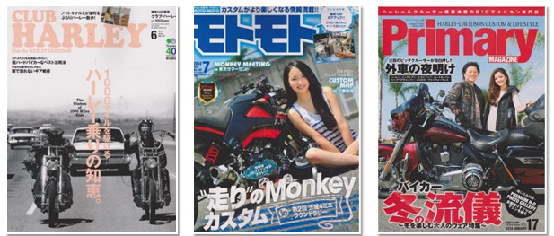

MEKKING is a new chemical product not only to fill up the holes while coating but also greatly improve the corrosion resistance.
Chrome plating has the features of beautiful appearance and corrosion resistance; but in fact, there are numerous tiny little holes in micron unit that are invisible to the naked eye. Once water or dust get into these tiny holes, blistering or rust can be occured.
Don't you worry about plating parts?
I want to keep the lights on the plating parts alive!
I want to know how to trim my plating!
I don't know how to use plating...
I want to polish my favorite machine
I want my vehicle to be brilliant and get attention by my folks around!
I want to increase my popularity and win the contest.
Anyway, I love plating!
We can solve it!
What is MEKKING?
The Japan's best plating protection developed by plating experts!
MEKKING, which developed by plating experts, is hard to get rusty even if you leave it outdoors during the rainy season! So much better than other products!
Working hours got shortened too!
1. Wipe out the dirt on the plating.2. Once or Twice, apply MEKKING on the "Magic Wipe" then spread on your plating ※ It's easy to get lust, so please spread out well.3. Since it begins to harden in 5-10 minutes, check for there isn't lust. Then leave it for 24 hours to completely cure it!
Corrosion resistance would dramatically improve.
There are numerous holes invisible to our eyes but exist on the surface of chrome plating. Once water or dust get into such holes, plating starts getting rusted. ※ Although chrome plating itself is extremely corrosion resistant, rust occurs from the small holes. MEKKING is designed to fill up these holes therefore it will give dramatic improvements of the corrosion resistance.
When you use MEKKING & SABITORI KING, the chrome parts will be looking like this
Chromium plating will be easier to get cleaned! The permenant shiny and glossy will be in your hand!More than 10 coats on decorated tracks is absolutely possible!
Because it is enough with 10 cm × 10 cm in 1 to 2 drops, you can use one bottle of MEKKING with 30 motorcycles.
MEKKING stays strong even with sea water.
I applied MEKKING on my jet ski part and it doesn't get rusty by coating it in spite of the harsh conditions of sea water. It is more recommended to those who live in seaside area.
Even great for European car plating malls!
MEKKING is also great for European car plating malls! In fact, European car plating malls are often made of alumite, not chrome plating, and are easy to corrode.
European cars can keep their shine by applying MEKKING among the brand new cars!
Simultaneously with the purchase of a new car, MEKKING's regular coating will solve the problem of corrosion peculiar to European cars. I would definitely recommend MEKKING for a mall that has already been corroded and has been polished well after removing corrosion. It is very effective in preventing corrosion.
(※ The corrosion of the alumite is not so powerful with SABITORI KING, so please remove the corrosion with an aluminum compound, etc., and apply the MEKING coating in a clean condition.)
It has been picked from many professional magazines.

A huge popularity among plating lovers
Check this out! MEKKING & SABITORI KING has been using by many Harley lovers. It is sold in two days on the most big event of Harley Davidson called BLUE SKY HEAVEN.
It is ranked as #1 of chemical sector on Japanese EC website.
From the one of the well-known Japanese actor Mr. Koichi Iwaki, we received a praised message for its luster!
Message from the developer
Recently, there are negative images that "plating is easy to be rusty, peeled off, or difficult to handle" Such images are brought from low quality due to the reduction of manufacturing cost in recent years, but we can not do anything about such currents. The original "glow of plating" is superb. I couldn't stand with hearing the bad reputation of plating because of those low quality plating. Therefore, I developed MEKKING, a magic protective agent for plating which keeps the shine and has good corrosion-resistance.
Attention of use
I think it's best to protect plating, not wipe it. There are many products with abrasive materials such as wax, when you keep cleaning with such products, the more chrome plating will come off.
After the MEKKING application, you no longer need to apply wax. The reason for this is that wax is the role of protecting the metal coating by oxidizing itself before metal is oxidized with oil as the main ingredient, but it also causes rust to be caused by the corrosion of the oil. MEKKING is a glass coating, so it is very hard to oxidize compared to oil.
Mekking is also very effective for chrome-plated plastic parts. (Because the plating is thin, it is good for prevention of peeling.)
SABITORI KING is an excellent product that removes rust without affecting chrome plating. The SABITORI KING also has an extra-large half-size magic wipe that removes dirt from the plating in order not to damage it.
Please use the Japan's best "MEKKKING" plating protective agent, and the "SABITORI KING" which is gentle to plating and strict to rust.
Characteristics of chrome plating
Beautiful looking!
Protects against the color change in the atmosphere!
Great corrosion resistance
It is often used in the outer parts of motorcycles, cars and trucks, but its greatest weakness is rust. That is... There are countless invisible holes, where water and dust enter, and the underlying plating rusts.
※ Chromium plating itself is so difficult to corrode that it rusts inside the hole before rust on the chrome!
The initial stage The occurance of water spots
The middle stage The occurance of spotty rusts
The plating, which increases rust, may swell or peel.
The chrome plating on the surface will peel off, and in the end, it will be too late if you don't take care of it at the beginning or at least the middle stage of the process, in a form that is deplorable. At the end of life, it is not possible to regenerate unless it is re-plated or the parts are purchased again.
As for chrome plating maintenance, is wax useless for it?
I get asked such questions a lot. It has advantages and disadvantages.The advantage is that the principal ingredient is oil, so the price is low. The disadvantage is that since oil is the main ingredient, it protects the metal coating by oxidizing the oil (wax) before the metal is oxidized, but it also causes rust by the corrosion of the oil.
For example, It is the same as women's makeup; if you don't apply it frequently, it is similar to making your skin rough. The biggest disadvantage is that if you polish the wax with a lot of abrasive material, the more you polish it, the more chrome plating you may lose.
※ The gold colored part looks smoldering because the chrome plating is taken off and the underlying nickel plating is produced. ※ No matter how much you polish a single metal, for example, stainless steel, the base is stainless, so there is no problem, but you can see clearly in this image why chrome plating should not be polished.
The chrome plating film is extremely thin!
The thickness of the chrome plating used for decoration is about 0.02-0.2 microns.
※ 1 micron=1/1000 mm
You can see that the chrome plating film is very thin. The chrome plating is base plating (copper plating + nickel plating) and is thick.
Bad use case
Waxing with towels, etc., and ruffling ... full of flaws This is the worst thing to do! Be careful when you polish with cloth, towel, etc! ※ Because it has the property of spreading dirt, it is easy to pull and damage if there is dirt. Because the chrome plating has a high mirror surface, it gets scratched and stands out due to small things. ※ It will be very difficult to repair it once it has been damaged.
The correct answer is not to polish chrome plating but to rub it gently.
So what would be the best method for the chrome plating maintenance? It is best to protect chrome plating instead of polishing it.
The weak point of chrome plating? → Holes. Corrosion resistance of chrome plating? → Good / Satisfactory What are the remediation measures? → If you cover up this hole, it will quickly increase corrosion resistance.
Stainless steel doesn't rust easily, does it?
Stainless steel is made of an alloy of nickel and chrome metals. In other words, chrome plating, if it were to fill even this hole, would yield a corrosion resistance comparable to that of sterility. AND! MEKKING is the one which would block the hole!! Usually, the gloss gets damaged when something is coated on the plated surface, but MEKKING is done by applying a chrome brightener while improving the specularity of the plated surface. That's why the chrome's distinctive blue light increases after application when you use MEKKING!!
You might want to remove rust before coat it with plating. 『SABITORI KING』is for that moment! It is an excellent product that removes rust without removing plating without affecting chrome plating. (The rust that cannot be obtained by the rust-triggering can only be reproduced by the plating.)